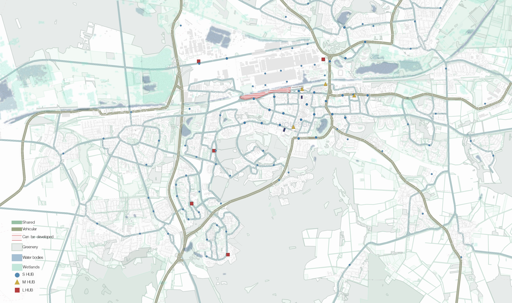
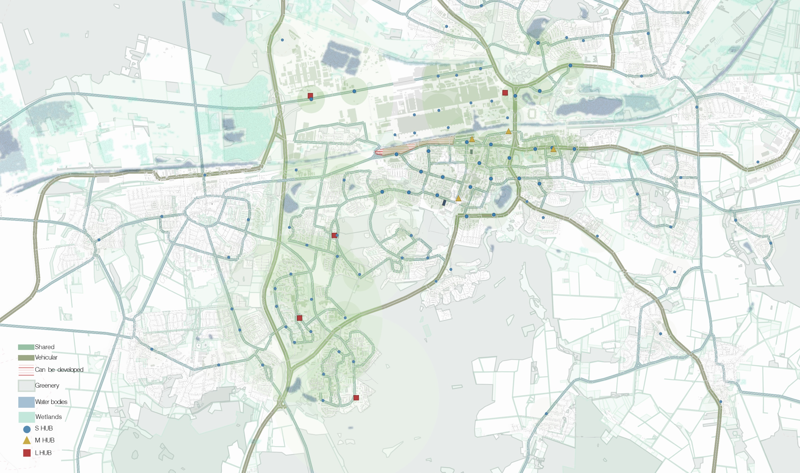
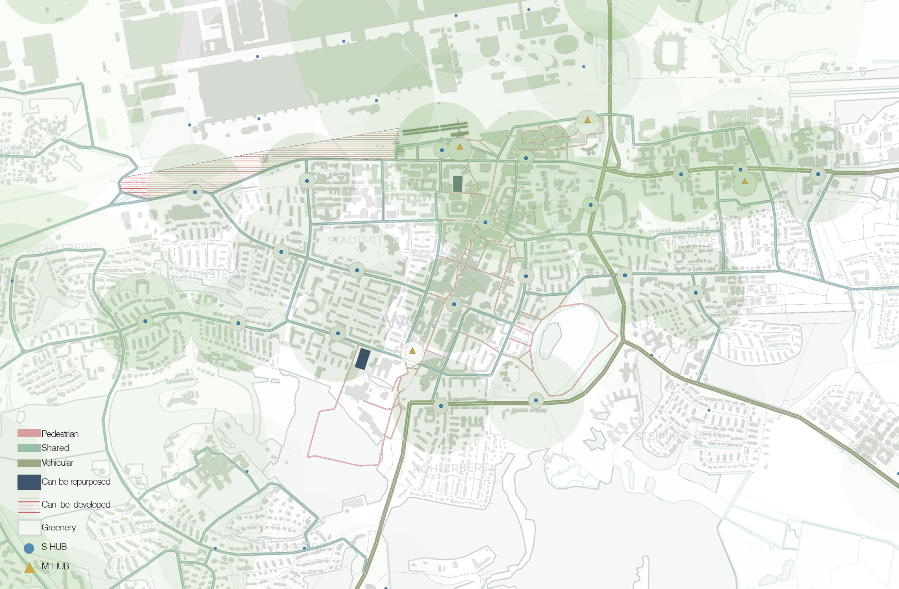
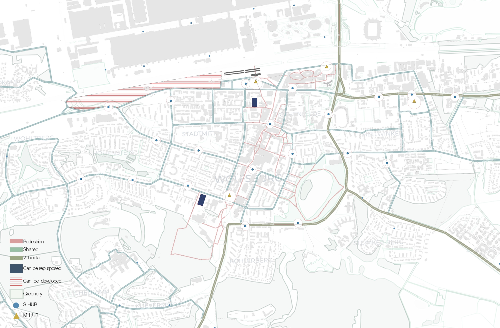
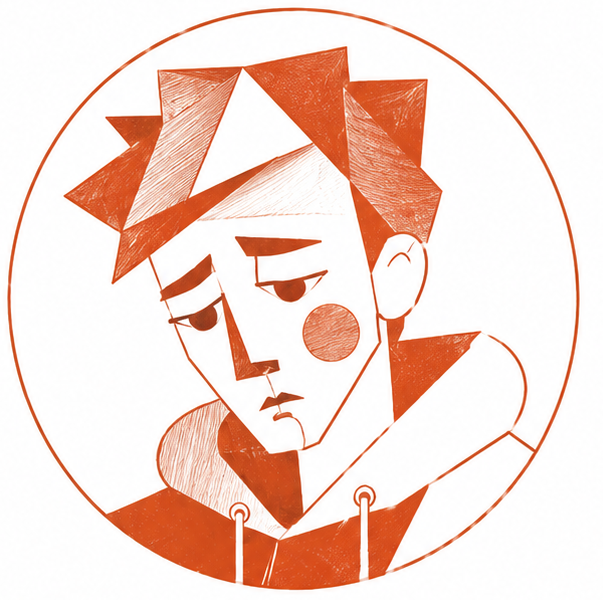
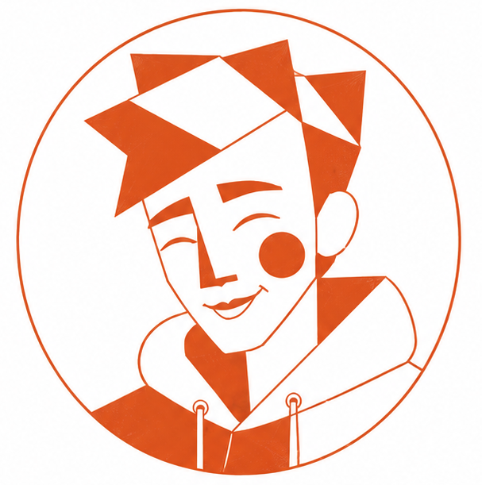
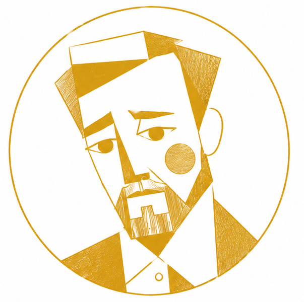
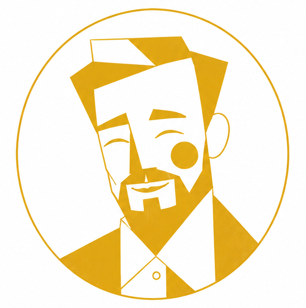
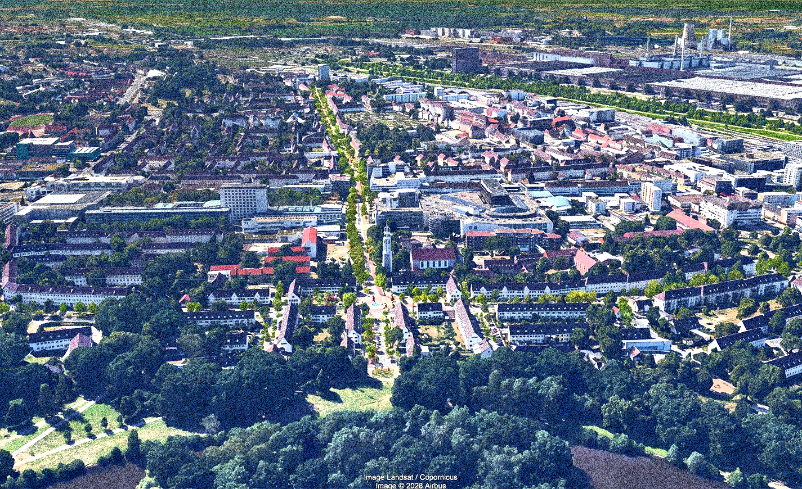
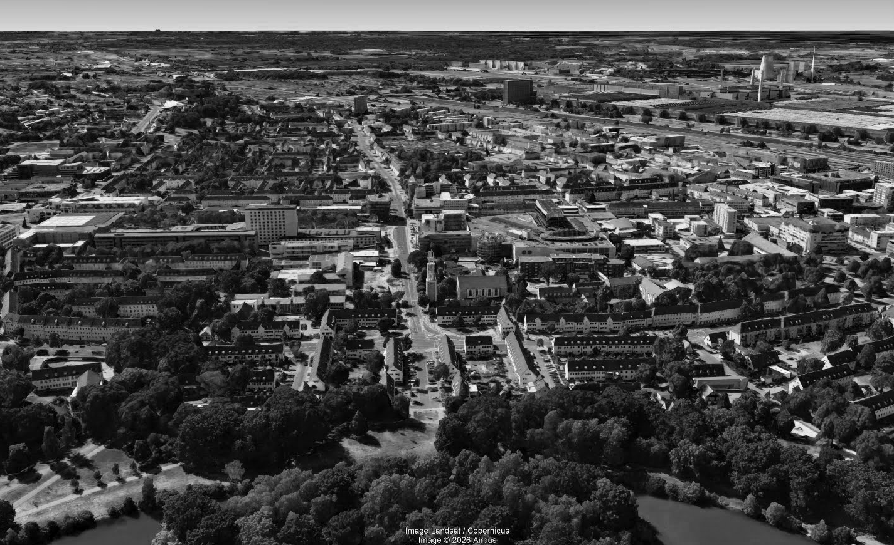

// integrated multimodal mobility infrastructure
Bauhaus-Universität Weimar + M.Sc. IUDDWhat this vision gives us — and why Wolfsburg needs it.
What this vision gives us — the benefits of a post-car city in spatial, financial, and human terms.
Numbers, visuals, street views, satellite imagery — help them see it.Wolfsburg dedicates a disproportionate share of its urban land to private car storage. This model is no longer necessary.
The VW shift waves define the city's rhythm — and created its infrastructure.From city scale to hub scale — the spatial logic of the system.
Zoning, connections,
mobility as a service
Peripheral settlements
connected


Traffic plan +
urban zoning
Mobility layer +
facility layer


Spatial and mobility features of each hub tier, explained through function diagrams. Toolkit palette and element placement exemplified at the VW factory gate.
L, M, S — three tiers, three spatial logics, one coherent system.Four lives. One city. How the hub network works for everyone who uses it.
Two family cars meant insurance, inspections, and repairs adding up to €400/month. Parking in the centre was a constant source of stress; mornings meant traffic and running late.
The family gave up both cars. E-bike from the S-hub to the M-hub, then an autonomous shuttle to the office in 12 minutes. The kids ride the same shuttle to school on their own — safe, on schedule, no drop-off needed.


Everything outside his neighbourhood depended on whether a parent could drive him. The city might as well have ended at the next street.
Every day starts with an e-bike from the nearest S-hub. Faster to school than the old bus. On weekends he rides to the lake with friends he met near the M-hub — kids from other districts he never would have crossed paths with before. For the first time, the whole city feels like his.


Thirty minutes in traffic every morning. A new car every three years — an obligation that just felt like the way things were.
An autonomous bus from the L-hub delivers him to the factory gate in 18 minutes, no congestion. He helps build the fleet, and he rides it. The city that made cars for the world is now making the future for itself.
After her leg gave out, she stopped driving. Every trip to the doctor or the market meant asking her daughter. Spontaneous outings quietly disappeared from her life.
An autonomous pod arrives at her door — booked from a tablet, no transfers, no steps. She goes to the market on Tuesdays again. She visits a friend across town without planning it a week ahead. Not because technology improved — because the city is finally arranged as if she lives in it too.
The system, proven.


Before After// a fundamentally new urban life through integrated multimodal mobility infrastructure
Prompt City · Wolfsburg Urban Vision · M.Sc. IUDD · SoSe 26